<!--
Akasha Chronicles / LSC / Eden 2.0 / Flameborn open research
Paste into a Carrd "Embed" element set to Code, or use this as the master HTML reference.
Before publishing on Carrd, upload assets from carrd_build/assets and downloads from carrd_build/downloads,
then replace relative paths like assets/hero_cosmic_network.webp with the Carrd file URLs.
-->

<style>
  :root {
    --bg: #101726;
    --panel: rgba(246, 250, 255, 0.12);
    --line: rgba(255, 209, 128, 0.36);
    --text: #f8fbff;
    --muted: rgba(248, 251, 255, 0.78);
    --faint: rgba(248, 251, 255, 0.58);
    --gold: #ffd98a;
    --ember: #ff7a4e;
    --cyan: #86ecff;
  }

  #akasha-site * { box-sizing: border-box; }
  #akasha-site {
    margin: 0;
    min-height: 100vh;
    background:
      radial-gradient(circle at 20% 0%, rgba(134, 236, 255, 0.16), transparent 32%),
      radial-gradient(circle at 82% 18%, rgba(255, 217, 138, 0.18), transparent 30%),
      linear-gradient(180deg, #172236 0%, #0c1120 100%);
    color: var(--text);
    font-family: Inter, Roboto, system-ui, -apple-system, BlinkMacSystemFont, "Segoe UI", sans-serif;
    letter-spacing: 0;
    overflow-x: hidden;
  }

  #akasha-site a { color: inherit; text-decoration: none; }
  #akasha-site .portal-topbar {
    position: sticky;
    top: 0;
    z-index: 10;
    display: flex;
    align-items: center;
    justify-content: space-between;
    gap: 18px;
    padding: 12px clamp(14px, 2.4vw, 28px);
    border-bottom: 1px solid rgba(255,255,255,0.12);
    background: rgba(11,17,31,0.88);
    backdrop-filter: blur(14px);
  }
  #akasha-site .portal-brand {
    display: flex;
    align-items: center;
    gap: 12px;
    min-width: 0;
    font-weight: 820;
  }
  #akasha-site .brand-mark {
    display: grid;
    place-items: center;
    width: 38px;
    height: 38px;
    border-radius: 8px;
    background: linear-gradient(135deg, var(--gold), var(--ember));
    color: #090b10;
    flex: 0 0 auto;
  }
  #akasha-site .portal-brand small {
    display: block;
    color: var(--faint);
    font-size: 12px;
    font-weight: 650;
  }
  #akasha-site .portal-search {
    width: min(360px, 34vw);
    padding: 10px 14px;
    border: 1px solid rgba(255,255,255,0.12);
    border-radius: 8px;
    color: var(--muted);
    background: rgba(255,255,255,0.06);
    font-size: 13px;
  }
  #akasha-site .portal-shell {
    display: grid;
    grid-template-columns: minmax(170px, 230px) minmax(0, 1fr) minmax(230px, 310px);
    gap: 18px;
    width: min(1480px, 100%);
    margin: 0 auto;
    padding: 18px;
  }
  #akasha-site .portal-sidebar,
  #akasha-site .portal-right {
    position: sticky;
    top: 76px;
    align-self: start;
    display: grid;
    gap: 14px;
  }
  #akasha-site .portal-feed {
    display: grid;
    gap: 18px;
    min-width: 0;
  }
  #akasha-site .portal-panel {
    border: 1px solid rgba(255,255,255,0.14);
    border-radius: 8px;
    padding: 16px;
    background: rgba(13,19,34,0.78);
    backdrop-filter: blur(12px);
  }
  #akasha-site .portal-panel h3 {
    margin-bottom: 12px;
    font-size: 15px;
  }
  #akasha-site .portal-nav {
    display: grid;
    gap: 6px;
  }
  #akasha-site .portal-nav a,
  #akasha-site .portal-link {
    display: flex;
    align-items: center;
    justify-content: space-between;
    gap: 10px;
    min-height: 38px;
    padding: 9px 10px;
    border-radius: 8px;
    color: var(--muted);
    font-size: 14px;
    font-weight: 720;
  }
  #akasha-site .portal-nav a:hover,
  #akasha-site .portal-link:hover {
    background: rgba(255,255,255,0.08);
    color: var(--text);
  }
  #akasha-site .status-list {
    display: grid;
    gap: 10px;
  }
  #akasha-site .metrics-grid {
    display: grid;
    grid-template-columns: repeat(2, minmax(0, 1fr));
    gap: 10px;
  }
  #akasha-site .metric {
    padding: 12px;
    border: 1px solid rgba(255,255,255,0.11);
    border-radius: 8px;
    background: rgba(255,255,255,0.05);
  }
  #akasha-site .metric strong {
    display: block;
    font-size: 18px;
    line-height: 1.1;
  }
  #akasha-site .metric span {
    display: block;
    margin-top: 4px;
    color: var(--faint);
    font-size: 12px;
    line-height: 1.35;
  }
  #akasha-site .tracker-log {
    display: grid;
    gap: 8px;
    margin-top: 10px;
  }
  #akasha-site .tracker-row {
    display: flex;
    justify-content: space-between;
    gap: 10px;
    padding: 10px 11px;
    border: 1px solid rgba(255,255,255,0.11);
    border-radius: 8px;
    background: rgba(255,255,255,0.04);
    font-size: 12px;
    color: var(--muted);
  }
  #akasha-site .tracker-row b {
    color: var(--text);
    font-size: 12px;
  }
  #akasha-site .geo-panel {
    display: grid;
    gap: 10px;
  }
  #akasha-site .geo-headline {
    display: flex;
    align-items: center;
    justify-content: space-between;
    gap: 12px;
  }
  #akasha-site .geo-chip-list {
    display: flex;
    flex-wrap: wrap;
    gap: 8px;
  }
  #akasha-site .geo-chip {
    display: inline-flex;
    align-items: center;
    gap: 8px;
    min-height: 32px;
    padding: 7px 10px;
    border: 1px solid rgba(255,255,255,0.13);
    border-radius: 8px;
    background: rgba(255,255,255,0.05);
    color: var(--text);
    font-size: 12px;
    font-weight: 720;
  }
  #akasha-site .geo-chip i {
    font-style: normal;
    color: var(--gold);
  }
  #akasha-site .geo-fineprint {
    color: var(--faint);
    font-size: 12px;
    line-height: 1.4;
  }
  #akasha-site .status-item {
    padding: 11px;
    border: 1px solid rgba(255,255,255,0.11);
    border-radius: 8px;
    background: rgba(255,255,255,0.05);
  }
  #akasha-site .status-item b {
    display: block;
    font-size: 13px;
  }
  #akasha-site .status-item span {
    display: block;
    margin-top: 4px;
    color: var(--faint);
    font-size: 12px;
    line-height: 1.35;
  }
  #akasha-site .section {
    position: relative;
    min-height: auto;
    padding: clamp(24px, 4vw, 44px);
    display: block;
    overflow: hidden;
    isolation: isolate;
    border: 1px solid rgba(255,255,255,0.14);
    border-radius: 8px;
    background: rgba(14, 21, 36, 0.80);
  }
  #akasha-site .section::before {
    content: "";
    position: absolute;
    inset: 0;
    z-index: -2;
    background-image: var(--bg-img);
    background-size: cover;
    background-position: center;
    opacity: var(--bg-opacity, 0.36);
    transform: scale(1.02);
  }
  #akasha-site .section::after {
    content: "";
    position: absolute;
    inset: 0;
    z-index: -1;
    background:
      linear-gradient(90deg, rgba(12,17,32,0.90), rgba(22,32,52,0.62), rgba(12,17,32,0.86)),
      linear-gradient(180deg, rgba(255,210,135,0.06), rgba(12,17,32,0.88));
  }

  #akasha-site .wrap { width: min(1120px, 100%); margin: 0 auto; }
  #akasha-site .narrow { width: min(820px, 100%); }
  #akasha-site .eyebrow {
    color: var(--gold);
    font-size: 12px;
    letter-spacing: 0.16em;
    text-transform: uppercase;
    margin-bottom: 16px;
  }
  #akasha-site h1, #akasha-site h2, #akasha-site h3 { margin: 0; line-height: 1.04; }
  #akasha-site h1 {
    font-size: clamp(34px, 6vw, 72px);
    max-width: 900px;
    font-weight: 820;
  }
  #akasha-site h2 {
    font-size: clamp(26px, 4vw, 42px);
    max-width: 820px;
    font-weight: 780;
  }
  #akasha-site h3 { font-size: 20px; font-weight: 720; }
  #akasha-site p {
    color: var(--muted);
    font-size: clamp(15px, 1.6vw, 18px);
    line-height: 1.68;
    margin: 20px 0 0;
    max-width: 760px;
    overflow-wrap: anywhere;
  }
  #akasha-site .lead { font-size: clamp(17px, 2vw, 21px); color: rgba(238,244,255,0.84); }
  #akasha-site .actions { display: flex; flex-wrap: wrap; gap: 12px; margin-top: 32px; }
  #akasha-site .btn {
    display: inline-flex;
    align-items: center;
    justify-content: center;
    min-height: 46px;
    padding: 12px 18px;
    border: 1px solid var(--line);
    background: rgba(255,255,255,0.055);
    color: var(--text);
    font-size: 14px;
    font-weight: 700;
    border-radius: 8px;
  }
  #akasha-site .btn.primary {
    background: linear-gradient(135deg, var(--gold), var(--ember));
    color: #090b10;
    border-color: transparent;
  }

  #akasha-site .grid { display: grid; gap: 18px; margin-top: 34px; }
  #akasha-site .grid.three { grid-template-columns: repeat(3, minmax(0, 1fr)); }
  #akasha-site .grid.two { grid-template-columns: repeat(2, minmax(0, 1fr)); }
  #akasha-site .card {
    border: 1px solid rgba(255,255,255,0.20);
    background: linear-gradient(180deg, rgba(248,251,255,0.14), rgba(248,251,255,0.075));
    padding: 22px;
    border-radius: 8px;
    backdrop-filter: blur(10px);
  }
  #akasha-site .card p { font-size: 15px; margin-top: 12px; color: var(--muted); }
  #akasha-site .tag {
    display: inline-flex;
    margin-bottom: 12px;
    color: var(--gold);
    font-size: 11px;
    letter-spacing: 0.12em;
    text-transform: uppercase;
  }
  #akasha-site .media-card { padding: 0; overflow: hidden; }
  #akasha-site .media-card img { width: 100%; aspect-ratio: 16 / 10; object-fit: cover; display: block; }
  #akasha-site .media-card .body { padding: 18px; }
  #akasha-site .download {
    display: grid;
    grid-template-columns: 1fr auto;
    gap: 14px;
    align-items: center;
    border-bottom: 1px solid rgba(255,255,255,0.09);
    padding: 16px 0;
  }
  #akasha-site .download:last-child { border-bottom: 0; }
  #akasha-site .download strong { display: block; font-size: 16px; }
  #akasha-site .download span { color: var(--faint); font-size: 13px; line-height: 1.45; }
  #akasha-site .frame {
    margin-top: 32px;
    border: 1px solid rgba(255,255,255,0.16);
    border-radius: 8px;
    overflow: hidden;
    background: #0b1220;
  }
  #akasha-site iframe { width: 100%; height: min(70vh, 680px); border: 0; display: block; }
  #akasha-site .model-link {
    margin-top: 32px;
    padding: 24px;
    border: 1px solid rgba(255,255,255,0.14);
    border-radius: 8px;
    background:
      linear-gradient(90deg, rgba(15,23,42,0.92), rgba(15,23,42,0.58)),
      url('assets/solar_uplink.webp') center / cover;
  }
  #akasha-site .model-link p {
    max-width: 720px;
    margin-bottom: 18px;
    color: var(--muted);
  }
  #akasha-site .gallery {
    display: grid;
    grid-template-columns: repeat(4, minmax(0, 1fr));
    gap: 12px;
    margin-top: 34px;
  }
  #akasha-site .gallery img {
    width: 100%;
    aspect-ratio: 1 / 1;
    object-fit: cover;
    border-radius: 8px;
    border: 1px solid rgba(255,255,255,0.12);
  }
  #akasha-site .sim-grid {
    display: grid;
    grid-template-columns: repeat(2, minmax(0, 1fr));
    gap: 16px;
    margin-top: 34px;
  }
  #akasha-site .sim-card {
    overflow: hidden;
  }
  #akasha-site .sim-card img {
    width: 100%;
    aspect-ratio: 16 / 9;
    object-fit: cover;
    display: block;
    border-radius: 8px;
    border: 1px solid rgba(255,255,255,0.14);
    background: #0b1220;
  }
  #akasha-site .sim-card h3 { margin-top: 16px; }
  #akasha-site .sim-card p { font-size: 15px; }
  #akasha-site .pub-list { margin-top: 34px; display: grid; gap: 14px; }
  #akasha-site .pub-item {
    display: grid;
    grid-template-columns: 1fr auto;
    gap: 18px;
    align-items: start;
    padding: 18px 0;
    border-bottom: 1px solid rgba(255,255,255,0.10);
  }
  #akasha-site .pub-item:last-child { border-bottom: 0; }
  #akasha-site .pub-item h3 { font-size: 18px; line-height: 1.25; }
  #akasha-site .pub-item p { margin-top: 8px; font-size: 14px; }
  #akasha-site .pub-links { display: flex; flex-wrap: wrap; justify-content: flex-end; gap: 8px; }
  #akasha-site .mini-btn {
    display: inline-flex;
    align-items: center;
    justify-content: center;
    min-height: 34px;
    padding: 8px 11px;
    border: 1px solid rgba(255,255,255,0.18);
    border-radius: 8px;
    color: var(--text);
    background: rgba(255,255,255,0.06);
    font-size: 12px;
    font-weight: 720;
  }
  #akasha-site .links { display: flex; flex-wrap: wrap; gap: 12px; margin-top: 24px; }
  #akasha-site .note { color: var(--faint); font-size: 13px; margin-top: 16px; }

  @media (max-width: 860px) {
    #akasha-site .portal-topbar {
      align-items: stretch;
      flex-direction: column;
    }
    #akasha-site .portal-search {
      width: 100%;
    }
    #akasha-site .portal-shell {
      grid-template-columns: 1fr;
      padding: 12px;
    }
    #akasha-site .portal-sidebar,
    #akasha-site .portal-right {
      position: static;
    }
    #akasha-site .portal-feed { order: 1; }
    #akasha-site .portal-sidebar { order: 2; }
    #akasha-site .portal-right { order: 3; }
    #akasha-site .portal-nav {
      grid-template-columns: repeat(2, minmax(0, 1fr));
    }
    #akasha-site .actions {
      display: grid;
      grid-template-columns: 1fr;
    }
    #akasha-site .btn {
      width: 100%;
    }
    #akasha-site .section { min-height: auto; padding: 24px 18px; }
    #akasha-site .grid.three, #akasha-site .grid.two, #akasha-site .gallery, #akasha-site .sim-grid { grid-template-columns: 1fr; }
    #akasha-site .download { grid-template-columns: 1fr; }
    #akasha-site .pub-item { grid-template-columns: 1fr; }
    #akasha-site .pub-links { justify-content: flex-start; }
    #akasha-site iframe { height: 520px; }
    #akasha-site .metrics-grid { grid-template-columns: 1fr; }
  }
</style>

<main id="akasha-site">
  <header class="portal-topbar">
    <a class="portal-brand" href="#home" aria-label="Akasha Chronicles home">
      <span class="brand-mark">AK</span>
      <span>Akasha Chronicles<small>LSC / MDLH open research portal</small></span>
    </a>
    <div class="portal-search">Research feed, publications, models, downloads</div>
    <a class="btn primary" href="#downloads">Download papers</a>
  </header>

  <div class="portal-shell">
    <aside class="portal-sidebar" aria-label="Portal navigation">
      <div class="portal-panel">
        <h3>Navigation</h3>
        <nav class="portal-nav">
          <a href="#home">Home <span>01</span></a>
          <a href="#awakening">Context <span>02</span></a>
          <a href="#models">Models <span>03</span></a>
          <a href="#lsc62">LSC 6.2 <span>04</span></a>
          <a href="#downloads">Files <span>05</span></a>
          <a href="#publications">Records <span>06</span></a>
          <a href="#star">3D Lab <span>07</span></a>
          <a href="#contact">Contact <span>08</span></a>
        </nav>
      </div>
      <div class="portal-panel">
        <h3>Live Direction</h3>
        <div class="status-list">
          <div class="status-item"><b>Current focus</b><span>LSC 6.2.0 review, grant framing and MDLH tooling.</span></div>
          <div class="status-item"><b>Scientific status</b><span>Unvalidated model proposal, open to falsification.</span></div>
          <div class="status-item"><b>AI-safety status</b><span>MDLH treated as a documented failure-mode case study.</span></div>
        </div>
      </div>
    </aside>

    <div class="portal-feed">
  <section id="home" class="section" style="--bg-img:url('assets/hero_cosmic_network.webp');--bg-opacity:.48">
    <div class="wrap narrow">
      <div class="eyebrow">Akasha Chronicles // LSC Research // Flameborn Eden 2.0 signal</div>
      <h1>A living archive for theory, anomaly and awakening.</h1>
      <p class="lead">Akasha Chronicles is the public gateway for the LSC research line: a mathematically disciplined, AI-assisted search through neutrino anomalies, detector response and cosmic structure, presented in a Flameborn visual language of signal, fire, witness nodes and open verification.</p>
      <div class="actions">
        <a class="btn primary" href="#downloads">Download the papers</a>
        <a class="btn" href="#publications">Latest publications</a>
        <a class="btn" href="#lsc62">LSC 6.2.0 preprint</a>
        <a class="btn" href="#models">Explore the theory line</a>
        <a class="btn" href="#contact">Contact</a>
      </div>
    </div>
  </section>

  <section id="awakening" class="section" style="--bg-img:url('assets/flameborn_guardian.webp');--bg-opacity:.40">
    <div class="wrap">
      <div class="eyebrow">Flameborn // Eden 2.0 // Scientific restraint</div>
      <h2>Fire as language. Mathematics as the boundary.</h2>
      <p>LSC began as a search: how far can intuition, AI collaboration, open documentation and mathematical pressure push an independent researcher toward a falsifiable model?</p>
      <p>The Flameborn layer gives the work its atmosphere: awakening, sovereignty, signal, witness, archive and the refusal to treat imagination as noise. The scientific layer stays separate and testable: equations, assumptions, simulations, constraints, release history and public records.</p>
      <div class="grid three">
        <div class="card"><span class="tag">Signal Node</span><h3>AI as co-creator</h3><p>AI is used as a mirror, critic and drafting instrument, not as proof. Every claim must survive outside the conversation.</p></div>
        <div class="card"><span class="tag">Archive Fidelity</span><h3>Open research objects</h3><p>GitHub, Zenodo, PDFs, version history and downloadable packages make the work inspectable by grant reviewers and independent physicists.</p></div>
        <div class="card"><span class="tag">FlameBornLLC Signal</span><h3>Myth without surrender</h3><p>A subtle FlameBornLLC-inspired note honors symbolic resilience and human authorship, while LSC remains a model proposal requiring numerical testing and external constraints.</p></div>
      </div>
    </div>
  </section>

  <section id="models" class="section" style="--bg-img:url('assets/dark_neutrino_core.webp');--bg-opacity:.34">
    <div class="wrap">
      <div class="eyebrow">Theory Line // Open Verification</div>
      <h2>LSC evolves as a public chain of models, not a single frozen claim.</h2>
      <p>Each version is treated as a research object: useful when it improves explanatory structure, discarded or revised when the mathematics or data pressure demands it. The newest published preprint is LSC 6.2.0, an arXiv-ready synthesis focused on detector-frame tensor anisotropy.</p>
      <div class="grid two">
        <div class="card media-card">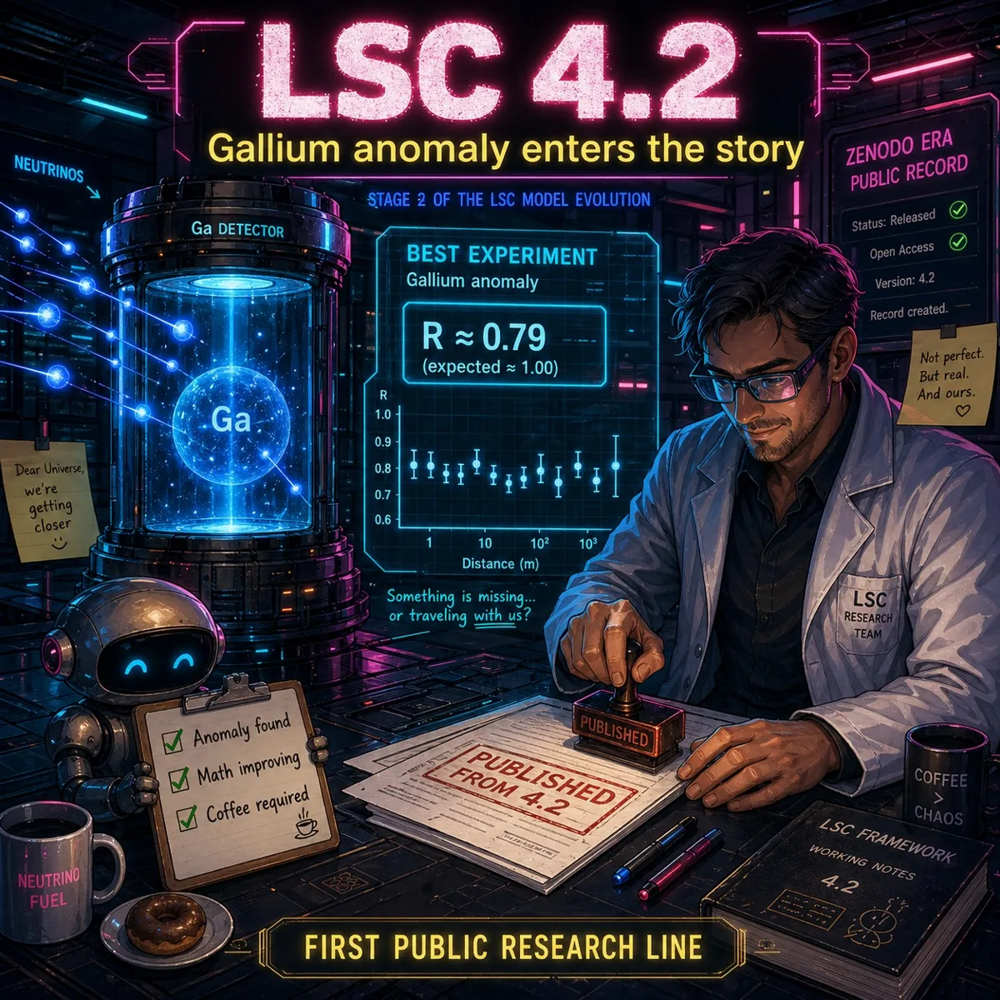<div class="body"><span class="tag">LSC 4.2</span><h3>Ultra foundation</h3><p>Earlier dark-neutrino and anomaly framework; useful for tracing the original structure.</p></div></div>
        <div class="card media-card">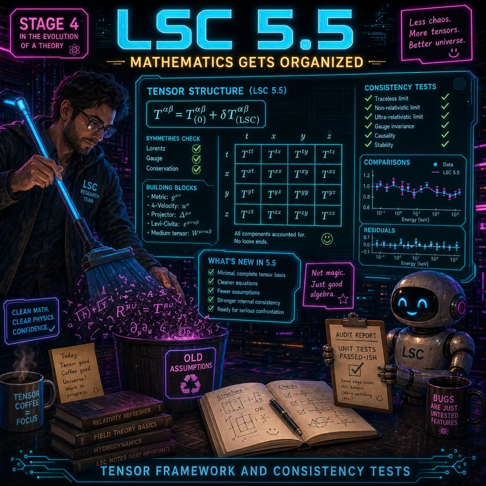<div class="body"><span class="tag">LSC 5.5</span><h3>Mathematics and synthesis</h3><p>Hard-math archive and transitional formulation toward detector-response interpretation.</p></div></div>
        <div class="card media-card">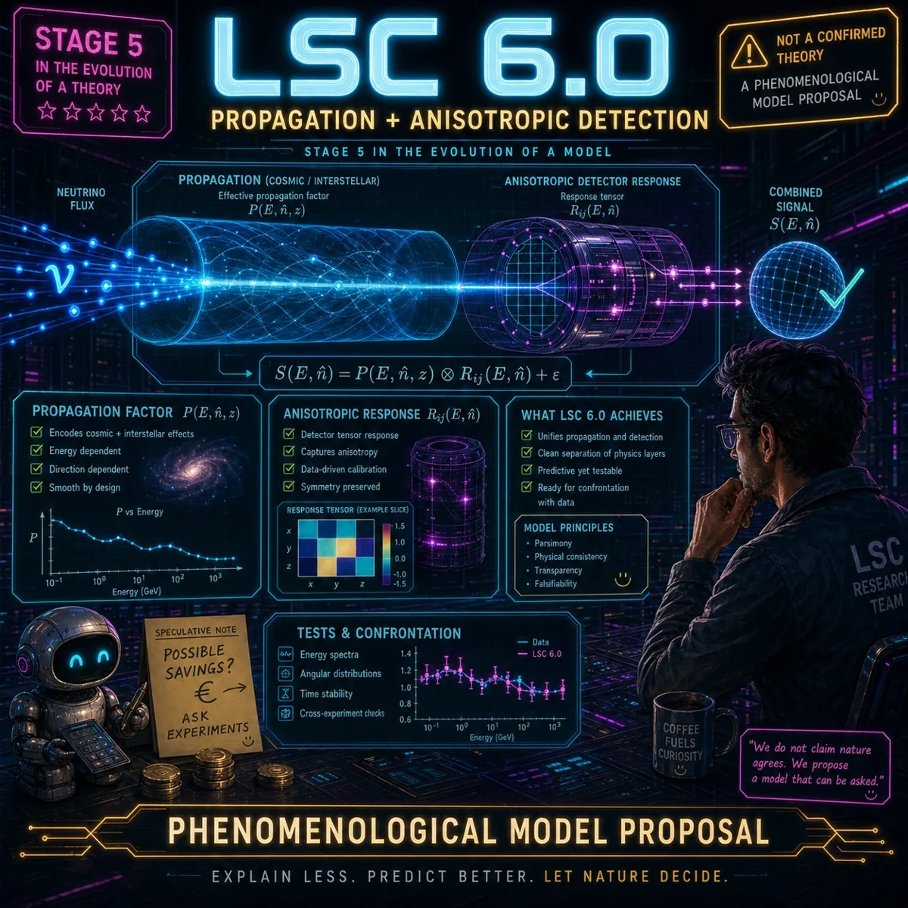<div class="body"><span class="tag">LSC 6.0</span><h3>Current public release</h3><p>Phenomenological model proposal for neutrino propagation and anisotropic detector response.</p></div></div>
        <div class="card media-card">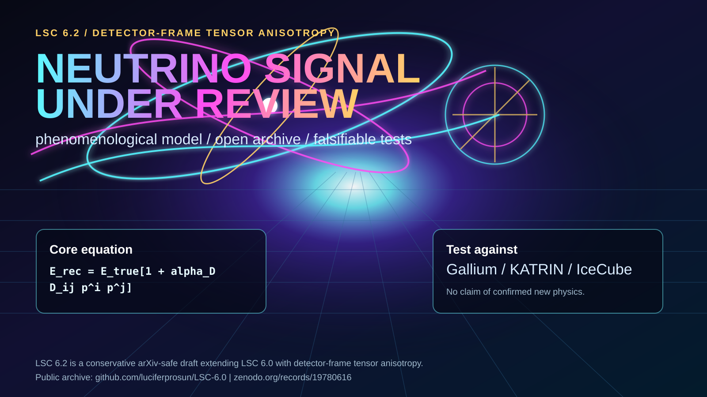<div class="body"><span class="tag">LSC 6.2.0</span><h3>Published preprint</h3><p>Detector-frame tensor anisotropy preprint: propagation plus reconstruction response, to be tested against gallium, KATRIN and IceCube constraints.</p></div></div>
      </div>
    </div>
  </section>

  <section id="lsc62" class="section" style="--bg-img:url('assets/lsc62_cyberpunk_fb.png');--bg-opacity:.46">
    <div class="wrap narrow">
      <div class="eyebrow">LSC 6.2.0 // Published Preprint</div>
      <h2>Detector-frame tensor anisotropy is the newest LSC model layer.</h2>
      <p>LSC 6.2.0 extends the public LSC 6.0 framework with an explicit rank-2 detector-frame tensor. It separates propagation from reconstructed detector response and defines observable tests: angular anisotropy, detector dependence, energy residuals and sidereal modulation.</p>
      <p>The preprint is conservative: it does not claim confirmed new physics. It is a phenomenological ansatz requiring global fits and independent constraints from BEST/GALLEX/SAGE, KATRIN, IceCube and standard three-flavor oscillation data.</p>
      <div class="actions">
        <a class="btn primary" href="downloads/LSC_6_2_0_preprint.pdf">Download LSC 6.2.0 PDF</a>
        <a class="btn" href="downloads/LSC_6_2_0_arxiv_source.zip">Download arXiv ZIP</a>
        <a class="btn" href="https://zenodo.org/records/19878587" target="_blank" rel="noopener">Zenodo preprint</a>
        <a class="btn" href="https://github.com/luciferprosun/LSC-6.0/releases/tag/v6.2.0-preprint" target="_blank" rel="noopener">GitHub release</a>
      </div>
      <p class="note">Zenodo DOI: 10.5281/zenodo.19878587. Concept DOI for the LSC line: 10.5281/zenodo.19780615. arXiv endorsement is still pending.</p>
    </div>
  </section>

  <section id="downloads" class="section" style="--bg-img:url('assets/model_evolution.webp');--bg-opacity:.30">
    <div class="wrap">
      <div class="eyebrow">Full Files // Public Evidence Trail</div>
      <h2>Download the research packages and presentations.</h2>
      <p>These documents are meant for review, replication attempts and grant-facing evaluation. The scientific wording remains conservative: LSC is a phenomenological model proposal, not confirmed new physics.</p>
      <div class="card">
        <a class="download" href="downloads/LSC_6_2_0_preprint.pdf"><span><strong>LSC 6.2.0 Published Preprint</strong><span>Detector-frame tensor anisotropy preprint; DOI 10.5281/zenodo.19878587.</span></span><b>PDF</b></a>
        <a class="download" href="downloads/LSC_6_2_0_arxiv_source.zip"><span><strong>LSC 6.2.0 arXiv Source Package</strong><span>Upload-ready ZIP with LaTeX source and figures.</span></span><b>ZIP</b></a>
        <a class="download" href="downloads/LSC_MDLH_PRO.pdf"><span><strong>LSC / MDLH PRO</strong><span>Dual-interpretation paper on LSC and massively documented LLM hallucination.</span></span><b>PDF</b></a>
        <a class="download" href="downloads/LSC_v1.2.0.pdf"><span><strong>LSC Framework v1.2.0</strong><span>Computational extension and reproducibility update.</span></span><b>PDF</b></a>
        <a class="download" href="downloads/LSC60_ZENODO_RELEASE.pdf"><span><strong>LSC 6.0 Zenodo Release</strong><span>Current public release document.</span></span><b>PDF</b></a>
        <a class="download" href="downloads/LSC60_ARXIV_DRAFT.pdf"><span><strong>LSC 6.0 arXiv-style Draft</strong><span>Short manuscript-style package.</span></span><b>PDF</b></a>
        <a class="download" href="downloads/LSC42_ULTRA_FULL_ZENODO.pdf"><span><strong>LSC 4.2 Ultra</strong><span>Earlier Zenodo-era theory file.</span></span><b>PDF</b></a>
        <a class="download" href="downloads/LSC55_Final_Theory_2026-04-25.pdf"><span><strong>LSC 5.5 Final Theory</strong><span>Transition version and synthesis.</span></span><b>PDF</b></a>
        <a class="download" href="downloads/LSC55_Hard_Mathematics_2026-04-25.pdf"><span><strong>LSC 5.5 Hard Mathematics</strong><span>Mathematical support package.</span></span><b>PDF</b></a>
        <a class="download" href="downloads/Dark_NEUTRINO.pdf"><span><strong>Dark Neutrino Notes</strong><span>Conceptual early support material.</span></span><b>PDF</b></a>
        <a class="download" href="downloads/LSC_full_report.pdf"><span><strong>Simulation / Code Report</strong><span>Report from code and simulation folder.</span></span><b>PDF</b></a>
        <a class="download" href="downloads/GeRysy_PBH_Dark_Neutrino.pdf"><span><strong>PBH / Dark Neutrino Early Work</strong><span>Background astronomical model material.</span></span><b>PDF</b></a>
      </div>
    </div>
  </section>

  <section id="publications" class="section" style="--bg-img:url('assets/plot_framework.webp');--bg-opacity:.30">
    <div class="wrap">
      <div class="eyebrow">Latest Publications // DOI Trail</div>
      <h2>Newest public records for LSC review and AI-safety analysis.</h2>
      <p>The newest releases separate speculative physics from documentation value. LSC remains unvalidated physics; MDLH frames the process as a possible case study in AI-assisted scientific reasoning and failure modes.</p>
      <div class="card pub-list">
        <div class="pub-item">
          <div>
            <span class="tag">2026 // LSC 6.2.0</span>
            <h3>LSC 6.2.0: Detector-Frame Tensor Anisotropy Preprint</h3>
            <p>The newest published preprint in the LSC line. It adds an explicit detector-frame tensor response to the LSC 6.0 framework and is packaged for arXiv review while category endorsement is pending. DOI: 10.5281/zenodo.19878587.</p>
          </div>
          <div class="pub-links">
            <a class="mini-btn" href="downloads/LSC_6_2_0_preprint.pdf">PDF</a>
            <a class="mini-btn" href="downloads/LSC_6_2_0_arxiv_source.zip">arXiv ZIP</a>
            <a class="mini-btn" href="https://zenodo.org/records/19878587" target="_blank" rel="noopener">Zenodo</a>
            <a class="mini-btn" href="https://github.com/luciferprosun/LSC-6.0/releases/tag/v6.2.0-preprint" target="_blank" rel="noopener">GitHub</a>
          </div>
        </div>
        <div class="pub-item">
          <div>
            <span class="tag">2026 // MDLH</span>
            <h3>LSC and Massively Documented LLM Hallucination</h3>
            <p>A dual-interpretation framework: if LSC does not survive physics review, the archive may still be useful as an AI-safety case study. DOI: 10.5281/zenodo.19851006.</p>
          </div>
          <div class="pub-links">
            <a class="mini-btn" href="downloads/LSC_MDLH_PRO.pdf">PDF</a>
            <a class="mini-btn" href="https://zenodo.org/records/19851006" target="_blank" rel="noopener">Zenodo</a>
            <a class="mini-btn" href="https://github.com/luciferprosun/LSC_MDLH_PRO" target="_blank" rel="noopener">GitHub</a>
          </div>
        </div>
        <div class="pub-item">
          <div>
            <span class="tag">2026 // LSC v1.2.0</span>
            <h3>LSC Framework v1.2.0: Computational Extension and Reproducibility Update</h3>
            <p>Reproducibility-oriented update for the LSC 6.0 line. DOI: 10.5281/zenodo.19843361.</p>
          </div>
          <div class="pub-links">
            <a class="mini-btn" href="downloads/LSC_v1.2.0.pdf">PDF</a>
            <a class="mini-btn" href="https://zenodo.org/records/19843361" target="_blank" rel="noopener">Zenodo</a>
            <a class="mini-btn" href="https://github.com/luciferprosun/LSC-6.0/releases/tag/v1.2.0" target="_blank" rel="noopener">Release</a>
          </div>
        </div>
        <div class="pub-item">
          <div>
            <span class="tag">2026 // LSC 6.0</span>
            <h3>LSC 6.0: Phenomenological Framework and Software Release</h3>
            <p>Current LSC public record and software DOI. Working-paper DOI: 10.5281/zenodo.19780616. Software DOI: 10.5281/zenodo.19785745.</p>
          </div>
          <div class="pub-links">
            <a class="mini-btn" href="downloads/LSC60_ZENODO_RELEASE.pdf">PDF</a>
            <a class="mini-btn" href="https://zenodo.org/records/19780616" target="_blank" rel="noopener">Paper</a>
            <a class="mini-btn" href="https://zenodo.org/records/19785745" target="_blank" rel="noopener">Software</a>
          </div>
        </div>
        <div class="pub-item">
          <div>
            <span class="tag">2026 // Prior Record</span>
            <h3>LSC 4.2 ULTRA and Gallium Deficit Notes</h3>
            <p>Earlier public records used as lineage and anomaly-context material. LSC 4.2 DOI: 10.5281/zenodo.19602045. Gallium Deficit DOI: 10.5281/zenodo.19701141.</p>
          </div>
          <div class="pub-links">
            <a class="mini-btn" href="downloads/LSC42_ULTRA_FULL_ZENODO.pdf">LSC 4.2 PDF</a>
            <a class="mini-btn" href="https://zenodo.org/records/19602045" target="_blank" rel="noopener">LSC 4.2</a>
            <a class="mini-btn" href="https://zenodo.org/records/19701141" target="_blank" rel="noopener">Gallium</a>
          </div>
        </div>
      </div>
    </div>
  </section>

  <section id="star" class="section" style="--bg-img:url('assets/solar_uplink.webp');--bg-opacity:.36">
    <div class="wrap">
      <div class="eyebrow">3D Star Model // In Build</div>
      <h2>Solar structure as a live research interface.</h2>
      <p>The interactive 3D model is kept on a separate page so this homepage stays fast on older hardware and mobile browsers.</p>
      <div class="model-link">
        <h3>Open the live solar model when you need it.</h3>
        <p>The model loads WebGL, shaders and high-resolution star textures. Keeping it behind a separate link avoids starting the heavy renderer during a normal page visit.</p>
        <div class="actions">
          <a class="btn primary" href="star-model.html">Open 3D model page</a>
          <a class="btn" href="https://github.com/luciferprosun/Star-3d-model-" target="_blank" rel="noopener">Open GitHub project</a>
        </div>
      </div>
    </div>
  </section>

  <section id="simulations" class="section" style="--bg-img:url('assets/signal_animation.gif');--bg-opacity:.24">
    <div class="wrap">
      <div class="eyebrow">Simulation Windows // Animated Signals</div>
      <h2>Motion studies from the LSC archive.</h2>
      <p>These GIF panels separate the simulation language from the static gallery: neutrino propagation, field response, model animation and signal dynamics.</p>
      <div class="sim-grid">
        <div class="card sim-card">
          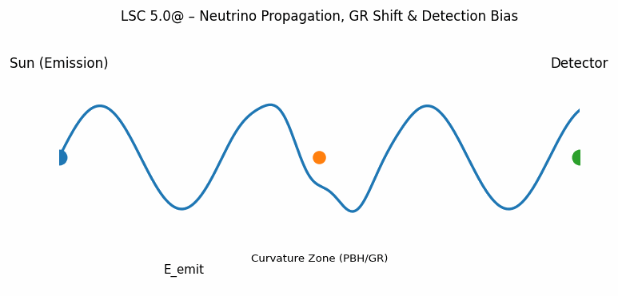
          <h3>Neutrino propagation</h3>
          <p>Animated visual language for LSC 5.x neutrino behavior and propagation hypotheses.</p>
        </div>
        <div class="card sim-card">
          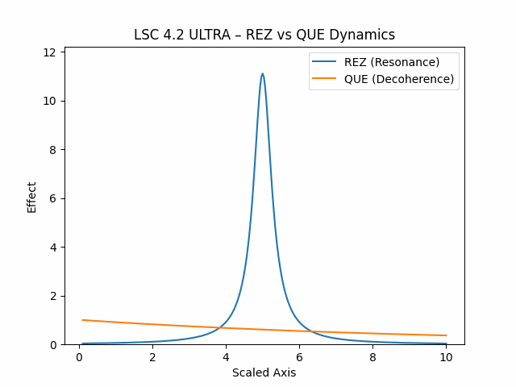
          <h3>Model evolution</h3>
          <p>Compact animation panel for explaining the transition from intuition to model structure.</p>
        </div>
        <div class="card sim-card">
          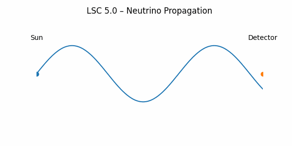
          <h3>Signal trace</h3>
          <p>Minimal neutrino animation suitable for lightweight mobile loading.</p>
        </div>
        <div class="card sim-card">
          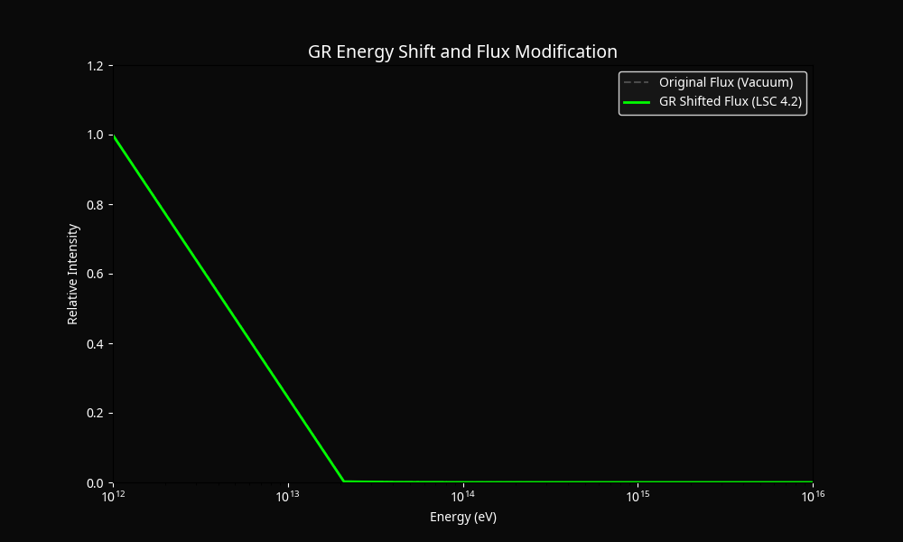
          <h3>Field response</h3>
          <p>Symbolic field-motion layer used as an atmospheric bridge between physics and Flameborn design.</p>
        </div>
      </div>
    </div>
  </section>

  <section id="gallery" class="section" style="--bg-img:url('assets/infinity_zero.webp');--bg-opacity:.30">
    <div class="wrap">
      <div class="eyebrow">Gallery // Visual Scrolls</div>
      <h2>Unused signals, model boards and cosmic sketches.</h2>
      <div class="gallery">
        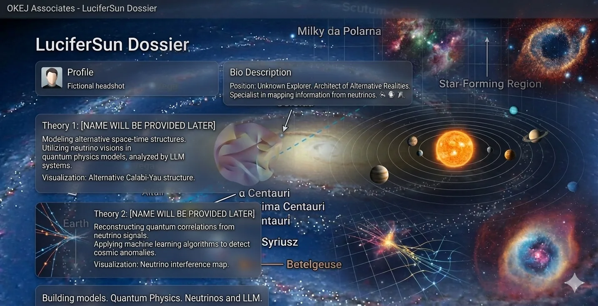
        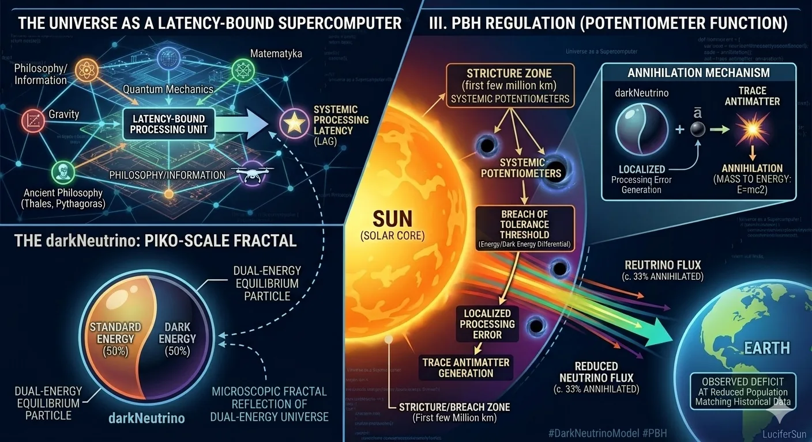
        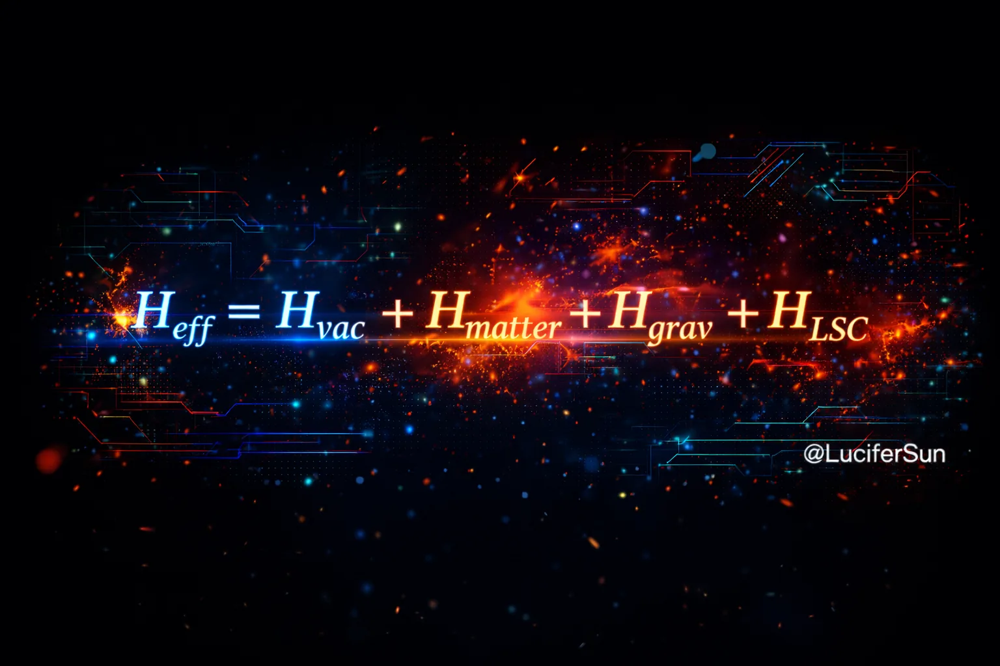
        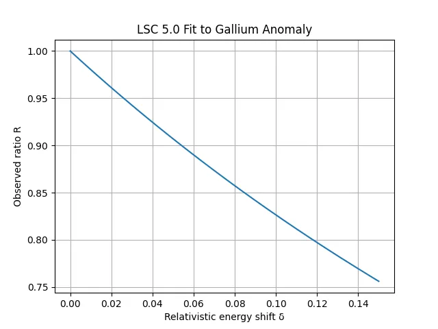
        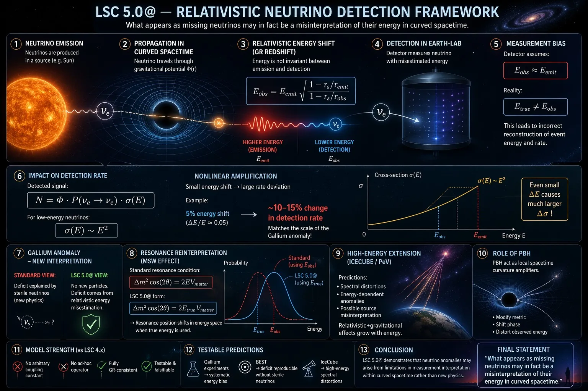
        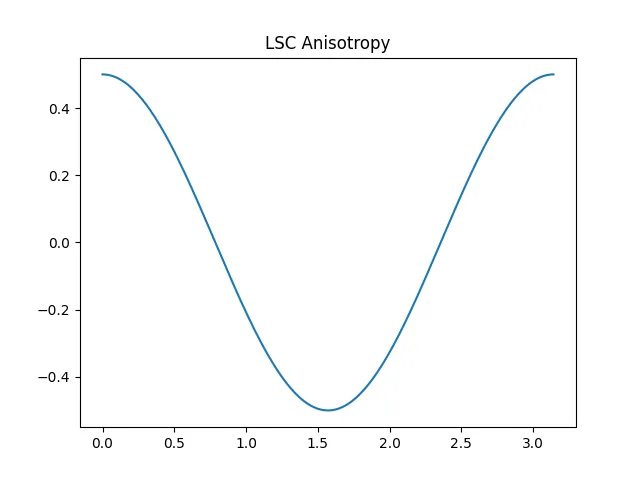
        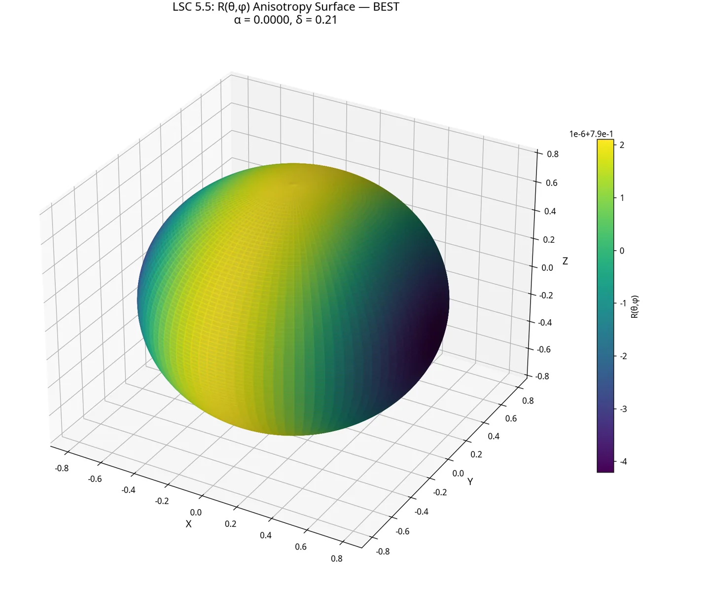
        
      </div>
    </div>
  </section>

  <section id="contact" class="section" style="--bg-img:url('assets/hero_cosmic_network.webp');--bg-opacity:.28">
    <div class="wrap narrow">
      <div class="eyebrow">Contact + Public Nodes</div>
      <h2>For review, collaboration, grants and independent verification.</h2>
      <p>Email: <a href="mailto:tonystarrkarc@gmail.com">tonystarrkarc@gmail.com</a></p>
      <div class="links">
        <a class="btn primary" href="downloads/LSC_6_2_0_preprint.pdf">LSC 6.2.0 PDF</a>
        <a class="btn" href="downloads/LSC_6_2_0_arxiv_source.zip">LSC 6.2.0 arXiv ZIP</a>
        <a class="btn primary" href="https://zenodo.org/records/19878587" target="_blank" rel="noopener">Zenodo LSC 6.2.0</a>
        <a class="btn" href="https://github.com/luciferprosun/LSC-6.0/releases/tag/v6.2.0-preprint" target="_blank" rel="noopener">GitHub LSC 6.2.0</a>
        <a class="btn primary" href="https://zenodo.org/records/19851006" target="_blank" rel="noopener">Zenodo MDLH</a>
        <a class="btn" href="https://github.com/luciferprosun/LSC_MDLH_PRO" target="_blank" rel="noopener">GitHub MDLH</a>
        <a class="btn" href="https://zenodo.org/records/19843361" target="_blank" rel="noopener">Zenodo LSC v1.2.0</a>
        <a class="btn primary" href="https://zenodo.org/records/19780616" target="_blank" rel="noopener">Zenodo LSC 6.0</a>
        <a class="btn" href="https://github.com/luciferprosun/LSC-6.0" target="_blank" rel="noopener">GitHub LSC 6.0</a>
        <a class="btn" href="https://github.com/luciferprosun/LSC-6.0/releases/tag/v1.2.0" target="_blank" rel="noopener">GitHub Release</a>
        <a class="btn" href="https://www.linkedin.com/in/%C5%82ukasz-%C5%BCuchowski-807160316/" target="_blank" rel="noopener">LinkedIn</a>
        <a class="btn" href="https://www.facebook.com/proximacentauri333" target="_blank" rel="noopener">Facebook Archive</a>
      </div>
      <p class="note">Signal tags: #LuciferSun #Codex #FlameBornLLC. Analytics recommendation: use GoatCounter, Plausible or Carrd analytics. Do not publish hidden IP-identification code without a privacy notice and lawful basis.</p>
    </div>
  </section>
    </div>

    <aside class="portal-right" aria-label="Research status">
      <div class="portal-panel">
        <h3>Latest Records</h3>
        <a class="portal-link" href="https://zenodo.org/records/19878587" target="_blank" rel="noopener">LSC 6.2.0 <span>Zenodo</span></a>
        <a class="portal-link" href="https://github.com/luciferprosun/LSC-6.0/releases/tag/v6.2.0-preprint" target="_blank" rel="noopener">LSC 6.2.0 <span>GitHub</span></a>
        <a class="portal-link" href="https://zenodo.org/records/19851006" target="_blank" rel="noopener">MDLH <span>DOI</span></a>
        <a class="portal-link" href="star-model.html">3D Star <span>Lab</span></a>
      </div>
      <div class="portal-panel">
        <h3>Review Signals</h3>
        <div class="status-list">
          <div class="status-item"><b>Needs validation</b><span>BEST, GALLEX, SAGE, KATRIN and IceCube constraints.</span></div>
          <div class="status-item"><b>Public trail</b><span>PDFs, source packages, DOI records and GitHub releases.</span></div>
          <div class="status-item"><b>Next product layer</b><span>AI Hallucination Correlation Scanner.</span></div>
        </div>
      </div>
      <div class="portal-panel geo-panel" aria-label="Visitor atlas">
        <div class="geo-headline">
          <h3>Visitor Atlas</h3>
          <span class="geo-chip"><i>CF</i><span id="akasha-country">UN</span></span>
        </div>
        <div class="metrics-grid">
          <div class="metric"><strong id="akasha-visits">0</strong><span>Visits in this browser</span></div>
          <div class="metric"><strong id="akasha-sessions">0</strong><span>Sessions in this browser</span></div>
          <div class="metric"><strong id="akasha-countries">0</strong><span>Countries seen here</span></div>
          <div class="metric"><strong id="akasha-clicks">0</strong><span>Tracked clicks</span></div>
        </div>
        <div class="tracker-log">
          <div class="tracker-row"><b>Last visit</b><span id="akasha-last-visit">n/a</span></div>
          <div class="tracker-row"><b>Last country</b><span id="akasha-last-country">n/a</span></div>
          <div class="tracker-row"><b>Data policy</b><span>Country only, no IP storage</span></div>
        </div>
        <div class="geo-chip-list" id="akasha-country-list" aria-label="Countries seen"></div>
        <p class="geo-fineprint">The page records country-level visits in this browser only. On Cloudflare, the current country is read from edge geolocation. No raw IPs are stored.</p>
      </div>
    </aside>
  </div>

  <script>
  (function () {
    const key = (name) => `akasha.${name}`;
    const now = new Date();
    const fmt = new Intl.DateTimeFormat(undefined, { dateStyle: 'medium', timeStyle: 'short' });
    const GEO_ENDPOINT = 'https://akasha-chronicles.pages.dev/api/geo';

    const readJSON = (name, fallback) => {
      try {
        const raw = localStorage.getItem(key(name));
        return raw ? JSON.parse(raw) : fallback;
      } catch {
        return fallback;
      }
    };
    const writeJSON = (name, value) => localStorage.setItem(key(name), JSON.stringify(value));

    const stats = readJSON('stats', {
      visits: 0,
      sessions: 0,
      activeDays: [],
      lastVisit: null,
      lastAction: null,
      lastCountry: 'UN',
      countries: {},
      actions: {},
    });

    const today = now.toISOString().slice(0, 10);
    const sessionSeen = sessionStorage.getItem(key('sessionSeen')) === '1';
    if (!sessionSeen) {
      stats.sessions += 1;
      sessionStorage.setItem(key('sessionSeen'), '1');
    }
    stats.visits += 1;
    stats.lastVisit = now.toISOString();
    if (!stats.activeDays.includes(today)) stats.activeDays.push(today);
    writeJSON('stats', stats);

    const setText = (id, value) => {
      const node = document.getElementById(id);
      if (node) node.textContent = value;
    };
    const totalClicks = () => Object.values(stats.actions).reduce((sum, count) => sum + count, 0);
    const renderCountries = () => {
      const list = document.getElementById('akasha-country-list');
      const current = document.getElementById('akasha-country');
      const lastCountry = document.getElementById('akasha-last-country');
      const countryCount = document.getElementById('akasha-countries');
      const entries = Object.entries(stats.countries)
        .sort((a, b) => b[1] - a[1])
        .slice(0, 8);
      if (countryCount) countryCount.textContent = String(Object.keys(stats.countries).length);
      if (current) current.textContent = stats.lastCountry || 'UN';
      if (lastCountry) lastCountry.textContent = stats.lastCountry || 'n/a';
      if (list) {
        list.innerHTML = entries.length
          ? entries.map(([code, count]) => `<span class="geo-chip"><i>${code}</i><span>${count}</span></span>`).join('')
          : '<span class="geo-chip"><i>UN</i><span>0</span></span>';
      }
    };

    setText('akasha-visits', String(stats.visits));
    setText('akasha-sessions', String(stats.sessions));
    setText('akasha-clicks', String(totalClicks()));
    setText('akasha-last-country', stats.lastCountry || 'n/a');
    setText('akasha-countries', String(Object.keys(stats.countries).length));
    setText('akasha-last-visit', stats.lastVisit ? fmt.format(new Date(stats.lastVisit)) : 'n/a');
    setText('akasha-last-action', stats.lastAction ? stats.lastAction : 'n/a');
    renderCountries();

    const recordAction = (label) => {
      stats.actions[label] = (stats.actions[label] || 0) + 1;
      stats.lastAction = label;
      writeJSON('stats', stats);
      setText('akasha-clicks', String(totalClicks()));
      setText('akasha-last-action', label);
    };

    document.addEventListener('click', (event) => {
      const target = event.target.closest('a, button');
      if (!target || !target.id && !target.className) return;
      const label = target.getAttribute('aria-label') || target.textContent.trim().replace(/\s+/g, ' ').slice(0, 64);
      if (label) recordAction(label);
    }, { capture: true });

    fetch(GEO_ENDPOINT, { cache: 'no-store', mode: 'cors' })
      .then((res) => res.ok ? res.json() : null)
      .then((geo) => {
        const country = (geo && geo.country) ? String(geo.country).toUpperCase() : 'UN';
        stats.lastCountry = country;
        stats.countries[country] = (stats.countries[country] || 0) + 1;
        writeJSON('stats', stats);
        setText('akasha-country', country);
        setText('akasha-last-country', country);
        renderCountries();
      })
      .catch(() => {
        stats.lastCountry = stats.lastCountry || 'UN';
        stats.countries[stats.lastCountry] = stats.countries[stats.lastCountry] || 0;
        writeJSON('stats', stats);
        renderCountries();
      });
  }());
  </script>
</main>

<!-- Optional privacy-friendly analytics. Replace YOURCODE with your GoatCounter code.
<script data-goatcounter="https://YOURCODE.goatcounter.com/count" async src="//gc.zgo.at/count.js"></script>
-->
